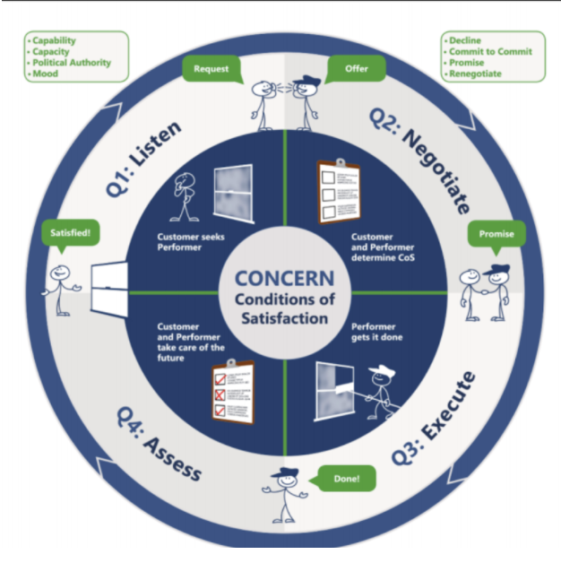

Workflow (v0.1.0)
Workflow is a language for describing, diagnosing, and constructing accountability relationships within an organization. It is effectively a language for making and managing promises. It was taught to us, Informal Systems, by Melissa Angeli and Laura McKinney of Jacquarden Consulting, with powerful results. Laura and Melissa were previously the CEO and Head of HR, respectively, for Galois, a successful R&D company in the US with an acclaimed organizational design, known as the collaborative web. Their paper on the subject describes common dysfunctions in management and leadership and how the collaborative web structure resolves them. It is well worth reading. The Workflow model comes from Fernando Flores and his Conversations for Action; his seminal thinking and guidance made Melissa and Laura’s work possible.
Workflow isn't so much a "model" or a "system" as it is a language. It's a tool for having better conversations. Workflow doesn't purport to solve your problems, but to help you clarify them, to talk about them more constructively. The workflow language allows us to have better conversations about the work we do together, to better understand our shared reality, and to better construct our collective future. At Informal, we believe the workflow language can provide tremendous value to companies looking to scale in a more sustainable way.
We can describe Workflow as a language for navigating promises. The language can be used to:
- Diagnose issues interfering with our work together
- Provide structure for new work
- Build empathy and relationship by seeing promise making and keeping as a skill to be developed
- Enhance communication by tools that allow people to focus on the barriers and issues directly.
The language is useful for small tasks through complex partnerships, from individual meetings to the long term mission and vision. In the end, it facilitates trust. The language is straightforward to learn and can be put into practice immediately. The value of the language is only experienced over time, as it is used consistently and becomes interwoven with the organization's culture.
By providing a language for talking about promises - about the stages of promise making and redemption - Workflow helps eliminate a lot of the ambiguity and awkwardness that can come from dealing with accountability. In doing so, it illuminates opportunities for improved organizational practices and designs.
In the rest of this guide, we describe the Workflow language and the elements of an organization it sheds light on: planning and OKRs, KPIs, project roles, effective meetings, functional teams, decision authorities, employee stewardship, etc. This guide is a work in progress, and will be updated to reflect our evolving understanding. See our blog post for more information on why we decided to adopt the Workflow language into our organizational design. And if you're interested in joining us, we're hiring.
Other References and Useful Links:
- Informal Organizations: Iterating on Cooperative Ownership - Blog post that provides more background context on how Informal is legally structured, including our research on alternative legal structures for organizations.
- The Informal System: Introducing Workflow - Blog post motivating and introducing Workflow and announcing this guide!
- The Collaborative Web paper - Paper published by Galois on their internal organizational structure, a major source of inspiration for us
Disclaimer
Use, or not, at your own risk :)
If you do, we'd love to hear from you at hello at informal.systems!
The Workflow Cycle
A Workflow is a relationship between two agents, usually two individuals within an organization, which we call the “Customer” and the “Performer”. The Customer is someone who holds a concern, an objective regarding some outcome they seek in the world. The Performer negotiates with the Customer, making a promise to fulfil that concern, to deliver results that satisfy the objective. Throughout the relationship, the Customer is responsible for the Performer's success.
In some sense, as you'll see throughout the guide, Workflow can be considered a more general model for understanding and successfully utilizing OKRs. But it's not just about OKRs, its about the general pattern of negotiating promises of different scope and over different time horizons. Where OKRs can sometimes feel like "OKRs for OKRs' sake, workflow language grounds the OKR process in a continuous cycle, with clear accountability, and with a focus on the conversations that help us understand what we're trying to do together.
The Four Phases of Workflow
A Workflow is a cycle, made up of four quadrants: Listen, Negotiate, Execute, Assess. At a high level, the quadrants are as follows:
- Listening (Q1): A customer articulates a need, making a request for help to achieve their objective, and a performer, hearing the request, makes an offer proposing a way to satisfy the need. They listen to each other to develop a shared understanding of the objective and decide if they would be a good fit to work together.
- Negotiating (Q2): The Customer and Performer negotiate on some results (the "conditions of satisfaction", or CoS), culminating in a promise from the Performer to deliver those results within some time frame. This is a commitment by the Performer on how they intend to satisfy the Customer’s concern.
- Executing (Q3): The Performer executes on the promise they made. Sometimes, during execution, you discover new information or something happens that requires a renegotiation, so you go back to Q2, negotiating.
- Assessing (Q4): The promise is redeemed, the work is reviewed, satisfaction is determined, and the cycle repeats.
The following diagram sumarizes the key aspects of each quadrant:

Thus workflow is a cycle of two people continuously working together to change the world by listening to eachother, negotiating over what they can do, executing on their promises, and assessing their outcomes. And the cycle repeats.
How Workflow is Used
We use this language directly in our conversations with each other to determine where we are in an accountability cycle. We say things like:
- “Who is the Customer for this concern, and who is their Performer?”
- "Are they able to be a good customer?"
- “Can we do a Q2 to negotiate some results for that concern?”
- “Is that a Q2 promise?”
- “Can we go back to Q2 on this?”
- “Let’s do a Q4!”
While it may seem obvious or trivial, the Workflow language can be used on virtually any scale in an organization to improve expectations, accountability, empathy, and overall working relationships. Workflow could be used on the scale of the CEO making long term promises to the Board of Directors to align the company's strategy, down to using it on daily Zoom meetings to ensure we’re not wasting our time and our meetings produce value, and everything in between.
In principle, everything anyone is doing at any time is part of some Workflow. Each person is likely to be on multiple Workflows at a time, as a customer for some and a performer for others. Importantly, every workflow has a “dual” Workflow, in the sense that the Customer is responsible for the Performer’s success. If Bob is Performing for Alice in some Workflow, Alice is performing for Bob in the dual workflow by promising to be a good Customer to Bob! So Customership is an active job. It involves clearly articulating a concern, helpfully negotiating on results, checking in regularly, and providing helpful feedback.
Many Workflows will often remain implicit, and repeated patterns of Workflows tend to become abstracted into “roles”. The activity of an organization is essentially its collection of Workflows. We can use the Workflow language to diagnose and improve communication as necessary, and to organize our overall planning.
Workflow can be used to describe any organizational structure, even if it’s not explicitly using the Workflow terminology. Typical management relationships and reporting lines and so on involve many implicit Workflows and promises. By surfacing those Workflows and promises explicitly, we can significantly improve the overall management structure.
Planning
We have already alluded to the idea that the promise made at the end of the Negotiation phase (Q2) of the Workflow can be viewed like an OKR: the Customer holds the Objective, and the Performer promises to deliver on some Results. This can be operationalized into planning for the whole company.
A company consists of many Workflows at a time. These Workflows themselves can correspond to different time horizons. For instance, in a small company, the CEO may be on a three year Workflow with the board (ie. making a three year promise), while a more junior employee is only on three month Workflows (ie. only making three month promises) with some project lead. Project leads themselves might be on one year workflows, perhaps making promises to the CEO, and so on.
This cascading time structure can be used to organize and plan OKRs for the whole company by articulating objectives at different time horizons and conceptualizing each one as a workflow, with a dedicated Customer and Performer at each stage. For instance, there may be a single three year Workflow where the CEO is the Performer and the Board of Directors is the Customer. At this point, the CEO is the only one able to make a three year commitment to the board. This three year promise captures the broadest scope and longest term objective for the company, what it needs to achieve in the world in the next three years.
Others, who are able to make promises on a smaller time horizon (i.e. the CTO on one year) would be the Performer for the CEO, who would now take on the role of a Customer on the shorter workflow. The CTO knows that the CEO has made a longer term commitment to the Board, so the CTO works with the CEO to make a series of one year promises which will help the CEO fulfil their three year promises to the Board. In turn the CTO may be a Customer on other Workflows with other members of the team, like individual engineers, on one year or three month time horizons.
In this way, the Performer in a Workflow at one time horizon is often the Customer for a Workflow on a smaller time horizon. For instance, the CEO makes three year promises to the board, the CTO makes one year promises to the CEO, and an engineer makes three month promises to the CTO.
| Time Horizon | Customer | Performer | Results |
|---|---|---|---|
| 3 Years | Board | CEO | Make the Company Awesome |
| 1 Year | CEO | CTO | Build Awesome Tech for the Company |
| 3 Months | CTO | Engineer | Implement Awesome Feature |
Notice how the Performer on one time horizon (eg. the CEO on the 3 year) is the customer on the next (eg. the CEO on the 1 year)the CEO o..
By mapping out the set of Workflows for the company’s core objectives and projects, we can get clarity over the accountability structure without needing to invoke “reporting lines” and “management”. Instead, we get an effectively equivalent but more explicit model of how the company is organized based on the kinds of promises people make, to who, and over what time horizon. This then directly illuminates a trajectory to scaling the organizational design, by empowering people to make promises of broader or narrower scope, and of shorter or longer time horizons. “Hierarchy” emerges here from the explicit responsibilities people are willing to take in terms of the scope and time-horizon of promises they are willing to make.
In the end, the goal is for every employee to be asking themselves: “what promises do I want to make, to whom, and on what time horizon? And what promises do I want made to me, by whom, and on what time frame?”
For any given time horizon, say three months, there may be multiple interlocking Workflows. For instance, a Product Owner will make a three month promise to the CEO, while engineers make a three month promise to the Product Owner. The Product Owner is now a Customer for the Engineers who are Performers.
| Time Horizon | Customer | Performer | Results |
|---|---|---|---|
| 1 year | CEO | Product Owner | Ship an Awesome Product |
| 1 year | Product Owner | Engineer 1 | Implement Part of Awesome Product |
| 1 year | Product Owner | Engineer 2 | Implement Part of Awesome Product |
Promises contained within Workflows between various Customers and Performers are necessarily dependant on each other, and thus their Workflow negotiations are "interlocking". This process of surfacing dependancies between Workflows will take place during the negation phase in Q2. For promises to be properly manifested, negotiations will need to take place with other team members. Often times, many promises will be negotiated at the same time and become interdependent with each other. The planning process for the company thus consists of settling interlocking workflows during negotiations so that everyone can make a set of aligned promises for their time horizon.
Results
Defining good results is hard work. But every Workflow negotiation should end in a promise to deliver some well defined results. Results should describe the actual outcome or value you want to create in the world. Often people put down outputs or activities, not outcomes. “Publish 5 articles” is an output, not an outcome. Why do you want to publish those posts? For what purpose? What outcome are you really looking for? What value do you want to create in the world?
Activities are things we do. Outputs are things we produce from our activities. Outcomes are the value we create by our activities and outputs. Generally we can control our activities and our outputs. But its harder to control the outcomes. That's what makes good results outcomes.
| Element | Description |
|---|---|
| Activities | Things we do |
| Outputs | Artifacts we produce |
| Results | Outcomes we create in the world |
When defining OKRs (or more broadly, negotiating promises), we want to focus on defining the real outcomes we want. How do you want your outputs and activities to change the world? This is often tricky and feels a bit contrived. It’s obvious why we want to publish 5 articles. Or is it?
Often it’s recommended to pursue SMART results: Specific, Measurable, Attainable, Relevant, Time Bound. This can be helpful. Results in the Workflow context are by default time bound because they are part of time bound Workflows. And we can make them measurable by finding some quantitative measure, like our 5 articles. But we can make the result more specific and relevant by specifying who we're creating value for, and what kind of value we're creating for them: "publish 5 articles in top distributed systems journals on the use of formal verification".
Ok, this is more specific and relevant and everything. But really, still, why do we want to do that? It’s still framed as a kind of output, not an outcome. An outcome tends to be something you have less control over - it’s the actual outcome you want to procure in the world. Sure, there’s peer review, so you can’t guarantee the paper will be published. But maybe a better result is “Have 2 different members of the team get invited to speak at a top conference on formal verification in blockchain” - this doesn’t even say anything about how many papers to publish, but it gets at the heart of what we might actually want out of publishing some papers. We could of course go further and ask why we even want that - what outcomes do we want out of presenting at the conference? But we'll stop there for now. The important point is just to have the conversations!
One helpful way to think about defining results is by types of results. We identify four major categories of results:
- Customer Value (CV)
- Adoption (A)
- Reputational (R)
- Sustainability (S).
It helps to try and roughly balance the results for an objective across these categories. Customer Value refers to the value we create for users. Adoption is about getting more people using our stuff. Reputational results increase our reputation in the world. Sustainability results show greater revenue or capacity within the team.
If you’re struggling to write good results, write the activities you think you should perform and the outputs you think you should produce. Then ask, why do I want to do these things? What outcome do I really want ? What value do I want to create in the world? Often it’s just a small change in phrasing that’s required. For instance, instead of “Promote cephalopod as a leading validator”, which is clearly an activity, a better result would be “Two independent news articles mention Cephalopod as a leading validator” or “a thousand people understand that Cephalopod is a leading validator”.
At the end of the day, it’s less important what specific text you write for a result. The more important thing is the conversation you have with your team around the result and the shared understanding you build around what you’re doing and why and what you plan to achieve in the next time horizon. OKRs are a tool for building shared understanding in the teams and across the company about what we’re doing and why, for the purpose of increasing autonomy and improving coordination, getting us all resonating and rowing in the same directions.
For some good resources on OKRs, see https://weekdone.com/resources/objectives-key-results
KPIs
Key Performance Indicators seem like some kind of alternative to OKRs. But they’re not. They’re complementary. KPIs are the day-to-day health checks and performance metrics. OKRs are what we use to improve our KPIs.
The company is an organism. It does business day-to-day. We can monitor its health by tracking some set of standard metrics - our KPIs. These tell us how we’re doing day-to-day. Using the KPIs, we can figure out what we need to improve in the company. Someone in the company will hold the concern for making that improvement, and will engage a Workflow to realize it. That Workflow, through its Q2 promise, includes an OKR focused on achieving those improvements. Once an OKR is achieved, it “precipitates” into the KPIs. For instance, we may monitor the kinds of purchase agreements we’re getting, maybe they’re all small contracts of $20k. We might decide we want to improve that, so we set some OKRs to increase the average size of a contract (which may involve all kinds of objectives and results, including more powerful tools or something). Once we meet the OKRs, they should translate into our KPIs - now our average contract size should be higher, and that’s become our new day-to-day KPI target.
Thus the KPIs become a kind of health check of the company that we can use to determine what OKRs we need to set in the next quarter (or year, etc.) to improve. Over time, many common OKRs will just mature into KPI targets and will become business as usual. This allows our OKR framework to really focus on what we need to do to improve, and take the company to the next level.
For more on the difference between OKRs and KPIs, see https://weekdone.com/okr-comparison/okr-vs-kpi
Roles
Workflow provides a way to construct roles from the bottom-up by understanding a role as an abstraction over repeated workflows. Any role can be defined by the pattern of Workflows it is engaged in.
We prefer not to use the term “manager” as it is overloaded and comes with many connotations. Management is effectively a collection of a number of distinct concerns which may be better understood as distinct roles. This is the crux of the Collaborative Web paper. Management can be commonly decomposed into at least three distinct functions: Product, Project, and People. There is also a separate function of Technical leadership, which is often confounded distressingly with these other three functions of management. We define the following roles for these four functions of managemnent:
| Role | Concern | Focus | Project Specific |
|---|---|---|---|
| Product Owner | Determine the right thing to build. | Users | Yes |
| Project Lead | Build the thing on time. | Coordination | Yes |
| Technical Lead | Build the thing well. | Tech | Yes |
| Steward | Take care of the people | People | No |
Notice that the Product, Project, and Technical concerns are project specific. But the People concern is not - it's a concern for the actual human beings, not the project they happen to be working on. The Stewardship section provides more detail.
All of these functions are critical, but it is extremely rare for a single individual to have the time, let alone the skills, to provide all of them. Thus, it is recommended that they be understood as distinct roles and that any individual be responsible for at most two.
Stewardship
Stewardship is a key function that is often lumped in with project-specific management, but which really need not, or even should not, be. It may be extremely beneficial to disentangle an individual's project-specific concerns from the concerns for that individual’s well-being. Since Stewardship is not project-specific, it need not be provided by someone on the same team, or even by someone with any kind of “management” designation. For instance, some engineer may not want formal “management” responsibilities for a project but may have very strong emotional intelligence and be willing to, with say 20% of their time, play the Steward role for a small handful of other employees, regardless of what they work on in the company.
In this way, Stewardship can be distributed throughout the organization so the role can be played by the people most suited to it, without confounding it with project-specific management functions. Some fraction of the company, say 20%, who are most suited for the role, should be explicitly and continuously trained in Stewardship and provide, say, 20% of their time as Stewards for other employees. One of Informal's engineers reflected on their experience with the stewards program in their blog post.
In our experience, it was helpful to bootstrap the Stewards program by engaging experienced coaches to serve as initial Stewards for everyone and to help train people internally to take over stewardship roles.
Functional Teams
Some teams might be thought of as “horizontal” or “functional”, rather than project-based. Things like ops/finance, marketing/design, and developer relations. In certain cases it may make sense for a project team to have its own dedicated personnel in these functions on the teams, but often these functions will be provided generally/horizontally across the company.
We can consider each of these functions as a project in itself. It doesn’t quite have the same structure as other projects though, since they work horizontally across all other projects. All projects will need some ops/finance, marketing/design, and devrels support. Thus we have slightly more complicated Workflows here.
One model for understanding these “horizontals” is through a set of 4 kinds of Workflows. For instance:
| Time Horizon | Customer | Performer | Objective |
|---|---|---|---|
| 1 year | CEO | COO | General availability of marketing for company |
| 1 year | Product Owner | COO | Specific availability of marketing for product |
| 3 month | COO | Marketer | General marketing needs for company |
| 3 month | Product Owner | Marketer | Specific marketing needs for product |
First, the CEO has a 1 year Workflow as Customer with the COO as Performer to create a marketing function to support all teams in the company. This Workflow is concerned with the general availability of marketing in the company. The main result of this Workflow is that when product owners are asked if they feel well supported by and get what they need from marketing, they say yes.
Second, each product owner has say a 1 year Workflow as Customer with the COO as Performer to ensure the marketing function has the specific capabilities and capacities each product needs. Each product will have distinct needs, and it’s the COO’s responsibility, through her Workflow with each product owner, to ensure the company has a pool of marketing resources to meet those specific needs.
Third, the COO has a 3 month Workflow with each individual marketing employee, where the COO sets the general expectations of how they should interact with the rest of the company. The COO holds the same concern as the CEO, but holds it on the shorter time horizon with the individual members of the marketing team, while the CEO holds it on the 1 year time horizon just with the COO (and for more functions than marketing).
Finally, each product owner has a 3 month Workflow with the specific members of the marketing team for their specific needs. For instance, the Product Owner of Tendermint will have a 3 month Workflow with some individual marketing person for the marketing results needed for Tendermint that quarter.
Notice how the Workflow language helps decompose the role of the COO here. She is Customer for some, Performer for others. Workflow helps us be crystal clear about what different people are responsible for and to whom, and how to determine if they’re doing a good job.
Finally, while we've called out specific functional teams such as devrel, marketing, design, finance and operations, the Collaborative Web paper considers extending this to all functions in the company, enabling Customers and Performers from across the company to discover new ways to work together.
Decision Authorities
A short note on decision authorities. Rather than naively associate decision authorities with “management” roles, they can be more intelligently and deliberately distributed throughout the company.
There are different kinds of decision authorities. We use the RAID model:
- Recommend (R) - authority to recommend/propose a particular decision
- Align / Approve (A) - authority to effectively veto a decision
- Input (I) - authority to provide input on a decision
- Decide (D) - authority to authorize the decision
Most of the power resides in the R, since this is where proposals come from. Those with “A” are required to be aligned with the R, while input is sought from those with “I”. The “D” authority is responsible for ensuring all other authorities were correctly followed, and for ultimately authorizing the decision. RAID is a common decision model you can read more about elsewhere.
It is important to note that RAID does not apply to the results negotiated in Q2 of a workflow. There are interlocking negotiations that inform the promises that can be made, but at the end of the day, the results negotiated between the Customer and Performer are not subject to a "decision making" framework determined by the RAID model, but are arise organically from a process of active listening and negotiation.
That said, in the day-to-day of executing a Workflow (ie. in Q3), certain decisions will need to be made: hiring a new team member, sponsoring a conference, deciding a new technology to adopt, etc. These are where the RAIDs kick in. Generally speaking, we will have clear roles (there’s many more roles than just the ones we have discussed), which will come with decision authorities that are expected to be utilized effectively in executing whatever Workflows are part of that role. For instance, a product owner is typically the hiring manager for their team, and will thus have R for hiring. Other team members will have A for hiring. Interviewers have I. The COO will have D. Hiring isn't a new workflow, it's a deciion made during execution of existing workflowss. Hiring managers should be thought of as executing 3 month or 1 year Workflows with the COO to grow their teams, with general results of the rules they need to follow for hiring. In conclusion, RAIDs do not determine workflows, but are a tool used during execution to make decisions that help deliver the results.
Meetings
Every meeting can be understood as a Workflow. This can help make meetings much more effective.
In Q1, the meeting is scheduled and the necessary participants are invited. Everyone who participates in a meeting is both a customer and a performer.
Every meeting should begin with a Q2 where results for the meeting are negotiated. Most good meetings already contain some form of agenda, but it helps to be explicit that a good agenda is really a negotiated set of results for the meeting. Often an agenda is just a list of items to discuss, but it helps to articulate what outcomes you really want out of the meeting:
- What are the results?
- What value are we trying to create out of this meeting?
- What do we want to be able to do when the meeting is over that we couldn’t do before?
The results section of the guide is helpful here. For each item on your agenda, state the Outcome you're looking for, and the time you're allocating to achieve it:
Agenda
- Discuss Hiring [10 Min]. Outcome: decide if we should make an offer to Jelena
You'll be thrilled to know we hired her. She helped write this guide :).
Q3 is the meeting execution, where meeting participants seek to deliver the results they negotiated in the agenda during Q2. It’s important to pay attention to time, refocus on the outcomes you’re seeking as necessary, and set action items to be reviewed in the next meeting. If necessary, renegotiate the results as you go, if you discover that you won’t have enough time for everything or you have some leftover time, as the case may be.
Finally, each meeting should include a short Q4 at the end, where participants can review the value they got out of the meeting:
- Did they meet the results?
- Did they cover topics on time?
- Did things happen that could have been better handled?
- What value was produced? What can they do now that they couldn’t do before?
If you start doing a Q4 at the end of each meeting (it only takes 5 minutes!), you can be more honest and explicit about the quality of your meetings. Maybe you’ll find that they’re not delivering much value. Once you do it a few times, you’ll either decide to stop having the meeting, or figure out how to improve them by negotiating better results!
Then when someone asks you to join a meeting for reasons you're not sure about, you can ask them:
- What outcomes are you looking for from this meeting, how do you think I can help achieve them, and how long do you think it will take?
Glossary
Glossary of Workflow terms.
- Workflow - language for describing, diagnosing, and constructing accountability relationships
- Q1/Q2/Q3/Q4 - the four stages of a Workflow (Listen, Negotiate, Execute, Assess)
- Customer - Holds the concern in a Workflow. Responsible for the Performer’s success!
- Performer - Makes a promise to a Customer within a Workflow. Responsible for delivering some results
- Concern - The objective held by the Customer. The thing they are trying to take care of
- Results - The outcome the Performer promises to deliver to address the Customer’s concern. Results are about the value you are creating in the world. Also known as Outcome or Conditions of Satisfaction.
- Outputs and Activities - these are not results. These are things a Performer will produce or do to achieve their desired outcome/results. It’s important to negotiate on Results, and leave Outputs and Activities up to the Performer, otherwise you end up micro-managing.
- Negotiation - this is the Q2 stage in the Workflow where Customer and Performer negotiate results
- Promise - at the end of a Q2 negotiation, the Performer makes a Promise to deliver certain results.
- Renegotiation - sometimes during Execution (Q3) a promise needs to be renegotiated, ie. the Workflow needs to return to Q2
- Assessment - this is the Q4 stage in the Workflow where Customer and Performer assess the outcome
- RAID - a decision making model with 4 authorities: Recommend, Align, Input, Decide. To be used generally during Q3 (Execution) of a Workflow, when decisions need to be made.